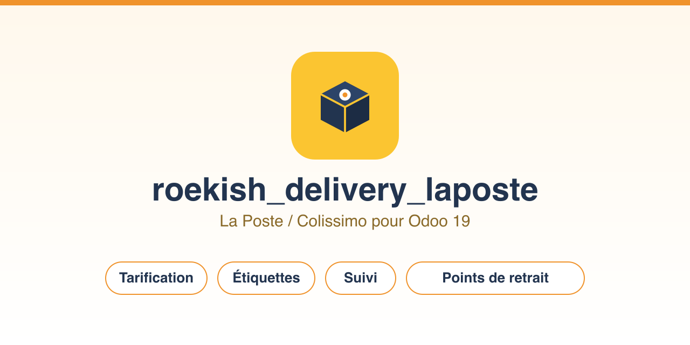

Calculez le prix, générez les étiquettes, suivez vos colis et proposez la livraison en point de retrait, directement dans Odoo.
Quatre transporteurs prêts à l'emploi sont fournis avec les tarifs Colissimo 2026 publics, que vous remplacez par vos tarifs négociés : Domicile, Point Retrait, Éco Outre-mer et Prêt-à-Envoyer. Les zones couvrent la France, l'Outre-mer (zones 1 et 2), l'Union européenne avec la Suisse, le Royaume-Uni et les zones internationales B et C.
Le module s'appuie sur le framework de livraison natif d'Odoo. La
tarification fonctionne sans aucune librairie externe. La génération
d'étiquettes utilise roulier et la recherche de points de
retrait utilise zeep ; ces deux librairies sont optionnelles et
importées à la demande.
Licence AGPL-3.0. Édité par ROEKISH.